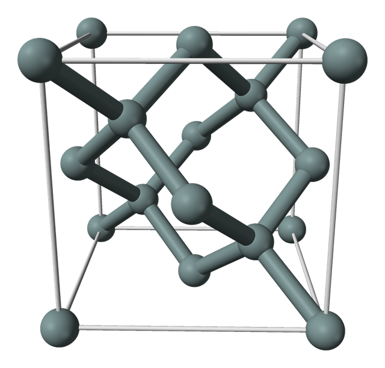
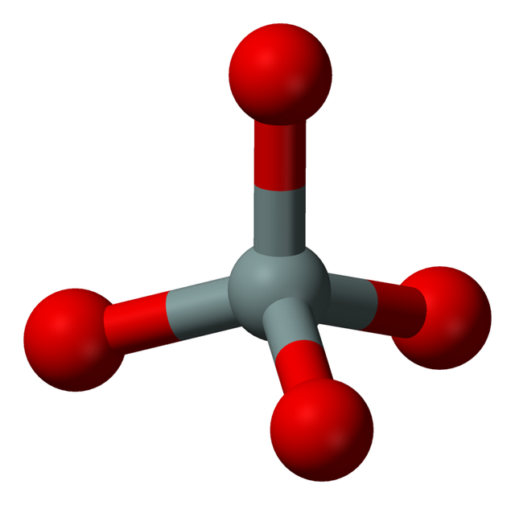
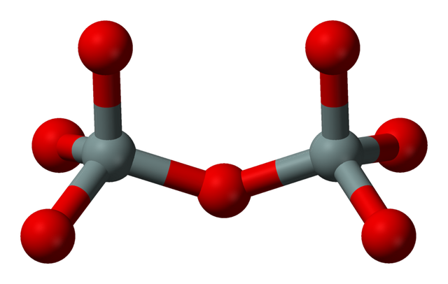

Module 05a
Bonds and Structure: Silicon, Silicon Dioxide and Their Interface
What a chemical bond is and the numbers that describe one; the tetrahedral bonding of crystalline silicon and of silicon dioxide, drawn in the conventions of the class notes; how thermal oxidation converts the one into the other; and what the boundary between them looks like, atom by atom.
The charges that the gate-oxide chapter of the notes classifies — fixed, interface-trapped, oxide-trapped and mobile — are traced to atoms in particular bonding states. Interface-trapped charge sits on a silicon atom at the interface with a bond left over. Oxide-trapped charge sits where the oxide's own bonding has failed: an oxygen missing from its place between two silicon atoms, a bond strained or broken. Mobile charge is an ion sitting in the gaps of the network. The origin of the fixed charge is only proposed: incompletely oxidised silicon near the interface, on the most widely held explanation (Plummer p. 294), or an oxygen bonded to one silicon where it should be bonded to two. The notes describe these states in small bond diagrams (pp. 24–26), and the lectures drew them on the board. This module supplies what those diagrams assume: what a bond is and which numbers describe it, how perfect bonding looks in crystalline silicon and in silicon dioxide, how the oxide grows out of the silicon, and how the two structures are joined.
The order follows the structure from the substrate upward. Crystalline silicon (§2) is the reference: every atom bonded four times, identically, in a pattern repeated without end. Silicon dioxide (§3) keeps four bonds per silicon but places an oxygen in each of them, and it gives up the long-range order of the crystal. The oxide is made from the silicon itself (§4), so the boundary between them is a moving reaction front, and counting atoms across it fixes how much silicon an oxidation consumes. At that boundary (§5) the two bonding patterns are joined across a mismatch in density; where the joining fails, charge appears, which is the subject of M05b.
1 · Bonds and the numbers that describe them
Every argument about the oxide and its interface on this page and the next reduces to counting bonds and comparing the numbers attached to them: why an oxygen bridges two silicon atoms, why a single missing bond is an electrical defect, why one terminating atom protects the interface better than another. This section defines the bond, the rule that fixes how many bonds each atom forms, and the three quantities that describe a bond — its polarity, its length and its strength — and it fixes the drawing conventions used in every atomic figure of this module and of M05b.
The electrons in an atom's outermost shell are its valence electrons, the ones that take part in chemical bonding; a silicon atom has four (Plummer p. 14). In a covalent bond two atoms share a pair of electrons of opposite spin, one contributed by each atom (Sze & Ng p. 8). The shared pair is concentrated between the two nuclei and holds them together. One line in a bond diagram stands for one such pair. The double lines in the notes' drawing of the silicon lattice (p. 24(a)) are the same bond with its two electrons drawn as separate strokes.
In the solids of this course most elements form a fixed number of covalent bonds, their valence: silicon 4, oxygen 2, nitrogen 3, hydrogen 1 and fluorine 1. An atom bonded exactly that many times is satisfied. Boron, with three valence electrons, is the exception that matters here: it forms three bonds with its own electrons and a fourth when it accepts one more. Substituted for a silicon atom in the crystal, it accepts an electron and bonds to all four silicon neighbours, which is what makes it an acceptor (Sze & Ng p. 17); in silicate glass it occupies both three-bonded sites, BO₃, and four-bonded ones, BO₄⁻ (Dell, Bray & Xiao 1983).
Counting valences predicts most of the structures below: four bonds per silicon and two per oxygen force every oxygen in silicon dioxide to bridge two silicon atoms and fix the formula SiO₂ (§3). An atom with fewer bonds than its valence is left with a bond that ends on no atom, a dangling bond. When the atom is neutral, the dangling bond holds one unpaired electron; it can also give that electron up, leaving the atom positive, or accept a second, leaving it negative. That ability to change charge is what makes a dangling bond on a silicon atom at the interface an interface trap (M05b); the notes call such a silicon, with three bonds instead of four, a trivalent silicon atom (p. 24).
The figures follow the convention of the notes and of the board drawings in Lecture 7 — the solid discs are silicon, the open circles oxygen — and extend it to the other atoms of the course and to the third dimension.
Two identical atoms share their pair equally. Two different atoms do not: the pair is drawn toward the atom with the greater electronegativity, the power of an atom in a molecule to attract electrons to itself (Sze & Ng p. 144). On Pauling's scale, in the revised values of Allred, silicon is 1.90, boron 2.04, hydrogen 2.20, nitrogen 3.04, oxygen 3.44 and fluorine 3.98. Pauling related the difference between the electronegativities of a bond's two atoms to its ionic character, the fraction of the shared pair effectively transferred to the more electronegative atom:
Formal oxidation state
The notes write the unit of the oxide as "each Si atom (+4) is bonded to 4 (O²⁻) atoms" (p. 22), and Wolf gives the two valences as +4 and −2 (p. 80). These are formal oxidation states: the charge each atom would carry if every bond were fully ionic, with both electrons of each bond assigned to the more electronegative atom. Silicon, with four bonds to oxygen, is counted +4; oxygen, with two bonds to silicon, −2. The count is bookkeeping, not a measured charge.
By equation (5a.1) the Si–O bond is about 45% ionic, so the charge actually displaced from each silicon toward its oxygens is a fraction of an electron per bond. Lecture 7 described the same polarity — oxygen negative, silicon positive. Pauling's original 1960 values, which Sze & Ng plot (Fig. 7, p. 145: Si 1.8, O 3.5), give 51% for the same bond; on either scale the Si–O bond is about half ionic. §5 uses the same count to label silicon atoms by their number of oxygen neighbours.
Three numbers describe a bond. Its length is the distance between the centres of the two bonded atoms — "from the center of one atom to the center of its nearest neighbor", in Wolf's definition (p. 81). Its angle is the angle between two bonds that share an atom. Its energy is the energy needed to break it and separate the two atoms. Tables give bond energies as means over many compounds, per mole of bonds; dividing by 96.485 kJ/mol, which is one electron-volt multiplied by Avogadro's number, converts them to electron-volts per bond. Si–O at 452 kJ/mol is 452/96.485 = 4.68 eV per bond.
| Bond | Ionic character | Length | Energy, kJ/mol | Energy, eV per bond | Where it appears |
|---|---|---|---|---|---|
| Si–Si | 0% | 2.35 Å (crystal) | 222 | 2.30 | crystalline silicon, §2 |
| Si–H | 2% | 1.48 Å | 318 | 3.30 | the hydrogen-passivated interface, M05b |
| Si–N | 28% | — | 355 | 3.68 | nitrided oxides, M06 §9 |
| Si–O | 45% | 1.62 Å (SiO₂) | 452 | 4.68 | silicon dioxide, §3 |
| Si–F | 66% | 1.55 Å (SiF₄) | 565 | 5.86 | fluorinated oxides, M06 §9 |
The energies are tabulated means (Huheey); a bond at a particular site in a particular solid departs from its mean. The ordering — Si–F above Si–O above Si–N above Si–H above Si–Si — is the starting point of every comparison in M05b and in M06 §9 of which bond survives heating or electrical stress.
2 · Crystalline silicon
Crystalline silicon is the reference structure against which the oxide and the interface are measured: every atom satisfied, every bond identical, the arrangement repeated without end. The notes draw it as a flat square grid; the real crystal is a three-dimensional network of tetrahedra. This section connects the two, because the one thing the grid cannot show — how many bonds each surface atom is left with — is the number the interface arithmetic of M05b starts from.
The valence electrons of a silicon atom occupy orbitals, the standing-wave states an electron can occupy around a nucleus: one 3s orbital, which is spherical, and three 3p orbitals, each directed along one axis. The isolated atom has the configuration 3s² 3p²: two electrons in the 3s orbital, one in each of two 3p orbitals, and the third 3p orbital empty. In the crystal one 3s electron is promoted into the empty 3p orbital (3s¹ 3p³), and the four half-filled orbitals combine into four equivalent hybrid orbitals, called sp³ because each is one part s to three parts p. The promotion costs energy, which the two additional bonds repay. Each sp³ hybrid holds one electron and points to one corner of a regular tetrahedron centred on the atom, so the angle between any two is arccos(−1/3) = 109.47° (Pauling 1931). A hybrid pointing at a hybrid of a neighbouring atom pairs its electron with the neighbour's: that pair is the covalent bond of §1. Four hybrids per atom give four bonds per atom, all at the tetrahedral angle.
The same hybrids account for the band gap. Combining the hybrids of neighbouring atoms gives bonding combinations, lower in energy, which broaden into the valence band, and antibonding combinations, higher in energy, which broaden into the conduction band (Harrison 1980). Every bonding state is filled and every antibonding state empty, and the 1.12 eV between them is the band gap of M01. The hybrid of a dangling bond has no partner to combine with, so it forms neither kind of state; its level lies between the two, inside the gap, where it can take an electron from the bands or give one up. M05b places the interface trap there.
Joining tetrahedral atoms in every direction produces the diamond lattice: two interpenetrating face-centred cubic lattices offset by one quarter of the cube diagonal, every atom with four equidistant nearest neighbours at the corners of a tetrahedron (Sze & Ng p. 8). The cube that repeats is the unit cell, and its side is the lattice constant, a = 5.431 Å for silicon (Sze & Ng Appendix G). The cell contains eight atoms: eight corners each shared among eight cells (8 × 1/8 = 1), six face centres each shared between two (6 × 1/2 = 3), and four atoms wholly inside. The atom density is therefore 8/a3 = 8/(5.431×10⁻⁸ cm)3 = 5.0×10²² cm⁻³. The Si–Si bond length is one quarter of the cube diagonal, √3a/4 = 2.35 Å.

The notes draw this lattice flat (p. 24(a)): each silicon a circle, joined to four neighbours on a square grid. The drawing preserves what the valence rule fixes — four bonds per atom, which atoms are bonded, whether each bond is satisfied — and gives up the geometry, drawing every angle as 90° and flattening the third dimension. For an atom inside the crystal nothing is lost. At a surface something is: the grid gives every surface atom exactly one bond pointing out of the crystal, whereas the true number depends on which crystal plane forms the surface.
A crystal plane is named by its Miller indices: the reciprocals of the plane's intercepts on the three cube axes, cleared to the smallest integers. The (100) plane is a cube face; the (111) plane cuts all three axes at the same distance and crosses the cube diagonally. MOS gate oxides are grown on (100) wafers (M04). The number of atoms per unit area of one such plane follows from the cell. A (100) face of side a holds one quarter of each of its four corner atoms and the whole of its face-centre atom, two atoms per a2; a (111) plane holds 4/(√3a2):
What matters at an interface is not the atoms per unit area but the bonds that cross it. An atom in a (100) plane has two bonds to the plane below and two to the plane above; cut the crystal along that plane and each surface atom is left with two outward bonds. An atom in the (111) surface plane has three bonds below it and one above, and is left with one. The bond densities therefore reverse the order of the atom densities: 2 × 6.8×10¹⁴ = 1.36×10¹⁵ outward bonds/cm² on (100), against 7.8×10¹⁴ on (111). The notes' grid, which draws one outward bond per surface atom whatever the plane, cannot show this.
Lattice constant in centimetres. a = 5.431 Å = 5.431×10⁻⁸ cm, so a2 = (5.431×10⁻⁸ cm)2 = 2.950×10⁻¹⁵ cm².
Atoms. Two per a2, equation (5a.2): N(100) = 2/(2.950×10⁻¹⁵ cm²) = 6.78×10¹⁴ cm⁻² ≈ 6.8×10¹⁴ cm⁻², the figure the notes use on p. 25.
Outward bonds. Two per surface atom: 2 × 6.78×10¹⁴ = 1.36×10¹⁵ cm⁻².
A (100) surface carries 6.8×10¹⁴ silicon atoms/cm² and 1.36×10¹⁵ outward bonds/cm², every one of which an oxidation must tie up.
The counts describe the ideal plane. A bare (100) surface in vacuum pairs its surface atoms into dimers, each atom bonding once to its partner, which leaves one dangling bond per atom instead of two (the reconstructed surface Himpsel et al. use as a reference); under a growing oxide the outward bonds end on oxygen instead (§5). Although (100) presents more outward bonds per unit area than (111), it gives the lower density of interface traps — a matter of interface chemistry rather than of bond counting, taken up in M05b.
From the geometry of the cube, show that a (111) plane of silicon holds 7.8×10¹⁴ atoms/cm², and give its density of outward bonds.
The (111) plane through three corners of the cube is an equilateral triangle whose sides are face diagonals of length √2a, so its area is (√3/4)(√2a)2 = (√3/2)a2. Its three corner atoms are each shared among the six triangles that meet at a point of the plane (3 × 1/6 = 1/2), and the three face-centre atoms on its edges are each shared between two triangles (3 × 1/2 = 3/2): two atoms per triangle.
N(111) = 2/((√3/2)a2) = 4/(√3a2) = 4/(1.732 × 2.950×10⁻¹⁵ cm²) = 7.83×10¹⁴ cm⁻². With one outward bond per surface atom, the bond density is the same number, 7.8×10¹⁴ cm⁻² — fewer bonds than the 1.36×10¹⁵ cm⁻² of (100), from more atoms.
3 · Silicon dioxide
Silicon dioxide keeps silicon's four bonds but puts an oxygen into each of them. Its unit is a tetrahedron, and the way tetrahedra join decides whether the solid is a crystal or a glass, how dense it is, and how easily other atoms pass through it. The oxide grown on a silicon wafer is the glass. The notes' account of its structure (p. 22) — the tetrahedron, bridging and non-bridging oxygen, the interatomic distances and the bond angle — is the subject of this section, with the reasons behind each statement.
The notes begin with the unit: "SiO₂ forms tetrahedral configuration." A silicon atom sits at the centre of a tetrahedron with an oxygen atom at each of the four corners, bonded to all four through its sp³ hybrids, so every O–Si–O angle is the tetrahedral 109.5° of §2. The Si–O bond length is 1.62 Å (notes p. 22; Wolf p. 81; Plummer Fig. 6-5, 0.162 nm), the value X-ray diffraction measures in vitreous silica (Mozzi & Warren 1969).


One of the notes' three distances does not fit the other two
The notes list three interatomic distances: O–O 2.27 Å, Si–O 1.62 Å and Si–Si 3.12 Å (p. 22), the same table Wolf prints (p. 81). They can be checked against one another. The O–O distance is the edge of a regular tetrahedron whose centre-to-corner distance is the Si–O bond, so O–O = 2 × 1.62 × sin(109.47°/2) = 2.65 Å, close to the 0.262 nm of Plummer's Fig. 6-5. Going the other way, an O–O distance of 2.27 Å with Si–O = 1.62 Å would require an O–Si–O angle of 2 arcsin(2.27/3.24) = 89°, which no tetrahedron has. The Si–Si value passes the same test: 2 × 1.62 × sin(144°/2) = 3.08 Å, within 0.04 Å of the notes' 3.12 Å.
The notes' table reads O–O 2.27 Å; the O–O distance in silicon dioxide is 2.62–2.65 Å. The check costs one line and catches a transcription error in any table of this kind.
Oxygen forms two bonds (§1). An oxygen at the corner of one tetrahedron has used one of them on its own silicon; the second it forms with the silicon of a neighbouring tetrahedron. The oxygen is then shared. In the notes' words, "in crystalline SiO₂, each oxygen atom belongs to 2 tetrahedra and is thus bonded to 2 Si atoms. This is known as bridging oxygen atoms." The count closes: each silicon has four oxygens, each oxygen is shared between two silicons, so there are 4 × 1/2 = 2 oxygens per silicon — SiO₂. Lecture 7 made the same count: each silicon bonded to four oxygens, each oxygen to two silicons.
Two numbers describe a bridge. The Si–O–Si bond angle at the oxygen is not fixed: the notes give a range of 110° to 180°, the most probable value being 144° (p. 22). Lecture 7 gave 145° to 147°. X-ray diffraction of vitreous silica finds a distribution running from 120° to 180° and peaking at 144° (Mozzi & Warren 1969). The distance between the two silicon atoms across the bridge, Si···Si, the notes give as 3.12 Å. It follows from the bond length and the angle — 2 × 1.62 × sin(144°/2) = 3.08 Å — and in crystalline α-quartz, with Si–O 1.61 Å and a 143.7° bridge (Levien et al. 1980), the same geometry gives 3.06 Å. This course uses the notes' 3.12 Å, and M05b measures the missing-oxygen defect against it.
The notes draw oxide tetrahedra in a shorthand (p. 24(b), p. 25): an oxide silicon with one bond down to the oxygen beneath it and three oxygens fanned above. The three fanned oxygens are the tetrahedron seen from the side — one in the page, one toward the reader, one behind — flattened into the page in the same way the square grid flattens the crystal.
Silica exists as crystals and as glass (Wolf p. 80). In a crystal — quartz is the familiar form — the tetrahedra repeat in a periodic pattern: the structure has long-range order, and in a two-dimensional sketch every ring of linked tetrahedra is identical. In the glass, called vitreous or fused silica, each tetrahedron is intact and almost every oxygen still bridges two of them, but the Si–O–Si angle and the rotation of each tetrahedron about its bridges vary from one bridge to the next. Order survives only across a tetrahedron and its immediate neighbours — short-range order — and the rings of linked tetrahedra close with varying numbers of members. Lecture 7 described exactly this: the hexagonal structure is there, but some rings are missing members and some have more than six. Wolf calls the result a continuous random network of tetrahedra (p. 81); the picture is Zachariasen's (1932). Plummer's figure of fused silica glass draws it conceptually as linked six-membered rings (Fig. 6-5).
Thermally grown oxide is always the glass. No crystalline form of SiO₂ has a lattice that matches the silicon substrate, so an oxide forced to grow as a crystal on silicon would carry stresses large enough to generate defects in the silicon; the freedom of the bridging bonds to rotate lets the network lose its long-range order instead (Plummer p. 292). A crystalline form is the thermodynamically stable one at processing temperatures, but rearranging the glass into it takes far longer than any oxidation or anneal: fused-silica furnace tubes crystallise, a process called devitrification, only after months or years at temperature.
The glass is also less dense. Wolf gives thermal SiO₂ the density of fused silica, 2.20 g/cm³, against 2.65 g/cm³ for quartz, with only 43% of its volume occupied, making its structure much more open than that of quartz (Wolf p. 82). A large variety of impurity atoms can consequently enter the oxide and diffuse through it — among them the hydrogen that passivates the interface and the sodium that forms mobile charge (M05b), and the boron that penetrates a thin gate oxide from a p⁺ gate (M05). Other references quote thermal oxide slightly denser: 2.27 g/cm³, or 2.3×10²² SiO₂ units/cm³ (Sze & Ng Appendix H; Taur & Ning Table 2.1); the 2.28×10²² units/cm³ of Himpsel et al. (1988) corresponds to the same 2.27 g/cm³. The atom counts on this page use 2.28×10²², and §4 shows what the difference does to the silicon-consumption ratio.
Not every oxygen in the glass bridges. The notes: "in amorphous (fused silica), some of the vertices of the tetrahedra have non-bridging oxygen atoms" — an oxygen bonded to one silicon only. Its second bond has to be accounted for, and it ends in one of three ways. The oxygen bonds to a hydrogen, forming a hydroxyl group, Si–O–H (Wolf Fig. 3-4d). It carries an extra electron as Si–O⁻, with a positive ion such as Na⁺ held beside it by an ionic bond rather than a covalent one (Wolf Fig. 3-4d). Or its second bond direction keeps a single unpaired electron, a dangling bond on oxygen rather than on silicon (Griscom 1985).
Wolf's figure of the thermal-oxide network (Fig. 3-4d) distinguishes two kinds of foreign atom. A network former takes the place of a silicon and bonds into the network through bridging oxygens. Phosphorus sits at the centre of a tetrahedron of oxygens, as silicon does; boron sits either at the centre of a triangle of three oxygens, BO₃, or, having accepted an electron, in a tetrahedron, BO₄⁻ (§1). A network modifier sits in the open spaces between tetrahedra and is held there by ionic bonds to the surrounding oxygens, chiefly non-bridging ones, not by covalent bonds into the framework; the alkali ions sodium and potassium are modifiers. Ionic bonds are not directional and do not fix the ion to one site the way four covalent bonds fix a silicon, so Na⁺ and K⁺ hop from one open space to the next and, under an electric field, drift through the oxide (Snow et al. 1965). That is what makes them the mobile charge Qm of M05b.
The notes close the structural description with a rule: "the greater the ratio of bridging to non bridging oxygens, the greater the cohesiveness of the SiO₂ structure." Each bridging oxygen is a bond holding two tetrahedra together; each non-bridging oxygen is a place where the network stops. Lecture 7 added that dry oxidation gives a more cohesive oxide than wet. The atomic reason is that water reacts with the network: a bridge takes up a water molecule and splits into two hydroxyl ends, ≡Si–O–Si≡ + H₂O → 2 ≡Si–OH, where ≡Si denotes a silicon whose other three bonds lead into the network (Doremus 1995). An oxide grown in steam contains OH and H₂O as a result (Wolf pp. 89–90), and every hydroxyl pair is a bridge the network has lost.
The last line of the notes' structural description is a consequence of these dimensions: "2 nm gate oxide is only 10–12 atomic layer thick." Wolf states the same figure directly after the table of interatomic distances (p. 81), without the arithmetic; dividing 20 Å by the 1.62 Å Si–O bond length gives 12. The density gives a second estimate. At 2.28×10²² SiO₂ units per cm³ (Himpsel et al. 1988) each unit occupies 1/(2.28×10²² cm⁻³) = 4.39×10⁻²³ cm³ = 43.9 ų, the volume of a cube 3.53 Å on a side, so a 20 Å film is 20/3.53 = 5.7 units thick. How many atomic layers that makes depends on how the three atoms of a unit are counted. Counting each unit's silicon and its two oxygens as two sublayers, the convention of the figure below, gives 2 × 5.7 ≈ 11; dividing 20 Å by the mean spacing of all the atoms, (3 × 2.28×10²² cm⁻³)−1/3 = 2.44 Å, gives 8. The estimates bracket the notes' 10–12: a 2 nm film is about ten atoms thick. In a film that thin the interfaces are not the boundaries of the oxide but a large part of it: the partly oxidised transition region of §5 alone is about two atomic layers of silicon.
4 · How the oxide grows, atom by atom
A thermal oxide is not deposited on the silicon; it is made from it. Oxygen or water arrives from the gas, crosses the oxide already grown, and reacts with silicon at the bottom of the film. Every silicon atom in the oxide was once a silicon atom of the wafer, and counting atoms before and after fixes how far the interface moves into the substrate for each nanometre of oxide grown. Lectures 8 and 9 both worked this split.
Isotope experiments settle where the reaction happens: grow an oxide in one oxygen isotope, continue in a second, and profile the film. The new oxide is found at the Si/SiO₂ interface, not at the top surface, so oxidation proceeds by inward diffusion of the oxidant, not by outward diffusion of silicon (Plummer p. 290). At the interface Si–Si bonds of the crystal are broken, oxygen atoms are inserted between the silicon atoms, and Si–O bonds form: Si + O₂ → SiO₂ in dry oxidation, Si + 2H₂O → SiO₂ + 2H₂ in wet. The interface is therefore a reaction front that moves down into the wafer as the oxide thickens. Lecture 9 stated the consequence: the oxygen has to travel all the way through the oxide to react with the silicon, which is why growth slows as the film thickens. The growth-rate models are the subject of M06 §8. Most workers hold that the dominant diffusing species are neutral: O₂, and H₂O and/or OH (Plummer pp. 293–294); one of the thin-oxide models in the notes (p. 33) instead has O₂⁻ ions diffusing together with holes.
Inserting oxygen costs volume. Crystalline silicon holds 5.00×10²² atoms/cm³ and thermal oxide 2.28×10²² silicon atoms/cm³ (Himpsel et al. 1988), so a silicon atom occupies 20.0 ų in the crystal and 43.9 ų once oxidised — 2.2 times as much. Unconstrained, the new oxide would expand about 30% in each of the three directions (1.3³ = 2.2); bonded to the substrate it cannot expand sideways, so the whole expansion goes upward (Plummer p. 291). The silicon below is not displaced. The interface moves down while the top of the oxide rises above where the silicon surface was.
Counting silicon atoms under 1 cm² of wafer gives the split. Consuming a thickness xSi of silicon releases nSixSi atoms, and all of them end up in an oxide of thickness xox that holds nSiO₂xox. Setting the two equal:
Texts quote 0.44 to 0.46 for this ratio because they assume different oxide densities. Taur & Ning's table of properties (Table 2.1: 2.3×10²² against 5.0×10²²) gives 0.46; Plummer uses 0.45 (p. 321); and a density of 2.20 g/cm³ (Wolf p. 82) gives 2.20 × 6.022×10²³/60.08 = 2.21×10²² units/cm³ and a ratio of 0.44. The spread is the spread in the measured density of the oxide. Lectures 8 and 9 use 0.46.
1 µm of oxide. Equation (5a.3): xSi = 0.46 × 1 µm = 0.46 µm of silicon consumed. The film's top surface stands 1 − 0.46 = 0.54 µm above the original silicon surface.
2 µm of oxide. The relation is linear in thickness: xSi = 0.46 × 2 µm = 0.92 µm consumed, and 2 − 0.92 = 1.08 µm above the original surface.
A 25 nm oxide. xSi = 0.46 × 25 nm = 11.5 nm of silicon consumed; 25 − 11.5 = 13.5 nm of the film lies above the original surface.
The reverse question. To consume 0.23 µm of silicon, grow xox = xSi/0.46 = 0.23 µm/0.46 = 0.50 µm of oxide.
Silicon consumed = 0.46 × oxide thickness, in whatever unit the thickness is given; the remaining 0.54 of the film lies above the original surface.
A 100 nm oxide is grown on a bare wafer and then removed completely in hydrofluoric acid, which dissolves SiO₂ but not silicon. How far below its original position is the new silicon surface, and how many silicon atoms per cm² went into the oxide?
The oxidation consumed xSi = 0.46 × 100 nm = 46 nm of silicon, and the etch removes only oxide, so the new surface lies 46 nm below the original one.
Silicon atoms consumed per cm²: nSixSi = 5.00×10²² cm⁻³ × 4.6×10⁻⁶ cm = 2.3×10¹⁷ cm⁻². Check against the oxide: nSiO₂xox = 2.28×10²² cm⁻³ × 1.0×10⁻⁵ cm = 2.28×10¹⁷ cm⁻², equal within the rounding of 0.456 to 0.46. Every silicon atom in the oxide came from the wafer.
5 · The Si/SiO₂ interface
The two structures of §2 and §3 meet at the interface, and they do not fit. The crystal packs silicon atoms more than twice as densely as the oxide, its bonds point in fixed tetrahedral directions, and the oxide above has neither the same density nor any fixed orientation. The notes draw the ideal answer to that problem; spectroscopy measures the real one. The difference between the two is the ground on which M05b builds.
Every outward bond of the surface silicon must end on an oxygen, and each of those oxygens must bridge into an oxide network that holds 2.28×10²² silicon atoms/cm³ against the crystal's 5.00×10²² — the bond-density mismatch. Within a few atomic layers the structure has to change from one silicon every 20.0 ų, in fixed crystal positions, to one every 43.9 ų in a random network.
The notes' figure p. 24(b) draws the perfect outcome, under the statement "Thermal oxidation can tie up these surface Si bonds along a perfect Si/SiO₂ interface." Read with the conventions of §2 and §3, the two bottom rows are the crystal in the square-grid shorthand; each top-row silicon sends its outward bond to an oxygen; and each such oxygen bridges to a silicon of the oxide, drawn as the tripod of §3, with three more oxygens above it. Every bond ends on an atom, so no surface silicon has a bond left over. The drawing shows the bonding rule, not the count: the grid gives each surface silicon one outward bond, where on (100) it has two (§2).
The measured interface is not this abrupt. The chemical state of each silicon atom can be read from X-ray photoelectron spectroscopy: X-rays — in Himpsel's work, from a synchrotron — eject electrons from the silicon 2p core level, and the energy that binds those electrons rises with each oxygen neighbour, because each oxygen draws valence charge away from the silicon (§1). Himpsel and co-workers (1988) resolved all four oxidised states — silicon with one, two, three and four oxygen neighbours, written Si¹⁺ to Si⁴⁺ by the same formal count as in §1 — at 0.95, 1.75, 2.48 and 3.9 eV above the binding energy in bulk silicon. For oxides grown in pure O₂ the intermediate states Si¹⁺, Si²⁺ and Si³⁺ together amount to (1.5 ± 0.5)×10¹⁵ atoms/cm², about two monolayers of silicon, a monolayer being one atomic plane, 6.8×10¹⁴ cm⁻² on (100).
An abrupt (100) interface — the last crystal plane bonded through both of its outward bonds to oxygen, and the next plane up fully oxide — would contain exactly one monolayer of Si²⁺ and nothing else. The measured density is about twice that and spread over all three intermediate states: the interface is graded, and Himpsel attributes its finite width to the bond-density mismatch. The two main sources differ on the width. Plummer, summarising transmission electron microscopy and other studies, describes the transition region as very narrow, perhaps only one atomic distance (p. 293). Himpsel's spectroscopy excludes that abrupt picture, because an abrupt interface cannot account for the large share of Si³⁺ it measures, and finds about two monolayers of partly oxidised silicon. Both place the width at the atomic scale, well under a nanometre.
This partly oxidised layer is the "transition region" that the notes label on their drawing of the four charges (p. 23), and the notes place the fixed oxide charge Qf in it. Plummer locates Qf as a sheet of positive charge within about 2 nm of the interface, perhaps closer, and records that most explanations attribute it to incompletely oxidised silicon (p. 294). Lecture 6 gave the same origin: some of the silicon is not bonded to oxygen, and that is where the fixed charge comes from.
Everything on this page describes bonding that works: every atom satisfied, every oxygen bridging, every surface bond tied up. M05b is about the places where it does not — a silicon left with a bond unused, an oxygen missing from a bridge, a bond stretched or broken — and the charge each of those carries.
Summary
- A covalent bond is a shared pair of electrons of opposite spin, one line in a bond diagram. Valence is the number of bonds an atom forms in these solids: Si 4, O 2, N 3, H 1, F 1. Boron forms three bonds, or four when it accepts an electron — as the acceptor B⁻ substituted in silicon, and as BO₄⁻ beside BO₃ in glass. An atom with its full count of bonds is satisfied; one with fewer carries a dangling bond, which holds one electron when neutral and can lose it or gain a second, and that change of charge makes it a trap.
- Electronegativity sets a bond's polarity. On the Pauling scale Si is 1.90 and O 3.44, and I = 1 − exp(−(ΔX)2/4) makes Si–O 45% ionic. The notes' Si (+4) and O²⁻ are formal oxidation states, bookkeeping for a bond that is about half ionic. 1 eV per bond = 96.485 kJ/mol: Si–Si 2.30, Si–H 3.30, Si–N 3.68, Si–O 4.68, Si–F 5.86 eV.
- Crystalline silicon: four sp³ bonds at 109.47°, diamond lattice, a = 5.431 Å, Si–Si 2.35 Å, 5.0×10²² atoms/cm³. The notes' square grid keeps bond count and connectivity, not angles, and cannot show that a (100) surface atom has two outward bonds and a (111) atom one: 6.8×10¹⁴ atoms and 1.36×10¹⁵ bonds/cm² on (100), 7.8×10¹⁴ of each on (111).
- SiO₂ is built of SiO₄ tetrahedra: Si–O 1.62 Å, O–Si–O 109.5°. Oxygen's valence of 2 makes each oxygen bridge two tetrahedra. In the notes Si–O–Si ranges from 110° to 180°, most probable 144° (X-ray diffraction: 120° to 180°, peak 144°), and Si···Si is 3.12 Å (3.08 Å from 1.62 Å at 144°; 3.06 Å in α-quartz). The notes' O–O distance of 2.27 Å conflicts with their own Si–O; the tetrahedral edge is 2.65 Å.
- Thermal oxide is amorphous, a continuous random network whose rings vary in size. No crystalline SiO₂ matches the silicon lattice, and rotation about the bridging bonds lets the network lose long-range order; crystalline silica is the stable phase but forms far too slowly to appear in processing. Its density is 2.20 g/cm³ (Wolf, the fused-silica value) to 2.27 g/cm³ (Sze & Ng; Taur & Ning), against 2.65 for quartz; with 43% of its volume occupied, impurities enter and diffuse through it.
- A non-bridging oxygen ends in OH, in O⁻ held by an ionic bond to a modifier ion such as Na⁺, or in an unpaired electron. The more bridging oxygens, the more cohesive the film; water turns bridges into Si–OH pairs, which is why dry oxide is more cohesive than wet. A 2 nm film is 5.7 SiO₂ units, 10–12 atomic layers in the notes (8 to 12 by the counting conventions of §3).
- Oxidation takes place at the Si/SiO₂ interface. The volume per silicon atom grows 2.2 times (20.0 → 43.9 ų) as it becomes SiO₂, and the substrate lets the film expand only upward, so xSi = 0.46 xox (2.28×10²²/5.00×10²², the denser end of the quoted range; 2.20 g/cm³ gives 0.44) and 0.54 xox lies above the original surface: 1 µm of oxide consumes 0.46 µm of silicon.
- The interface joins a crystal of 5.00×10²² Si/cm³ to an oxide of 2.28×10²². The notes draw it ideal, every surface bond ending on a bridging oxygen. For oxides grown in pure O₂ the real transition region holds (1.5 ± 0.5)×10¹⁵ cm⁻² of partly oxidised Si¹⁺, Si²⁺ and Si³⁺, about two monolayers; the notes place the fixed oxide charge in this region (Plummer: within about 2 nm of the interface).
Where this came from
| §1 | Class notes pp. 22, 24; Lecture 7. Valence electrons, Plummer, Silicon VLSI Technology, p. 14; the covalent bond as a shared pair of opposite spins, Sze & Ng, Physics of Semiconductor Devices 3/E, p. 8; electronegativity, Sze & Ng pp. 144–145 and Fig. 7. Pauling-scale values as revised by A. L. Allred, J. Inorg. Nucl. Chem. 17, 215 (1961); ionic character, L. Pauling, The Nature of the Chemical Bond, 3rd ed. (Cornell, 1960). Formal valences +4 and −2 and the definition of interatomic distance, Wolf, Silicon Processing for the VLSI Era Vol. 4, pp. 80–81. Bond energies and the Si–H length, J. E. Huheey, E. A. Keiter & R. L. Keiter, Inorganic Chemistry, 4th ed., pp. A-21–A-34; the Si–F length in SiF₄, J. Breidung, J. Demaison, L. Margulès & W. Thiel, Chem. Phys. Lett. 313, 713 (1999). Boron as a four-bonded acceptor in silicon, Sze & Ng p. 17; BO₃ and BO₄ sites in silicate glass, W. J. Dell, P. J. Bray & S. Z. Xiao, J. Non-Cryst. Solids 58, 1 (1983) |
| §2 | Class notes pp. 24(a), 25. sp³ hybrids, L. Pauling, J. Am. Chem. Soc. 53, 1367 (1931); bonding and antibonding states as the bands, W. A. Harrison, Electronic Structure and the Properties of Solids (Freeman, 1980). Diamond lattice, Sze & Ng p. 8; a = 5.431 Å, Sze & Ng Appendix G. Atom densities of Si, (100) and (111), and the reconstructed (100) surface, F. J. Himpsel et al., Phys. Rev. B 38, 6084 (1988), Table I and p. 6087. Unit-cell render, Ben Mills, Wikimedia Commons, public domain |
| §3 | Class notes p. 22; Lecture 7. Wolf Vol. 4 pp. 80–82, 90 and Fig. 3-4; Plummer p. 292 and Fig. 6-5. R. L. Mozzi & B. E. Warren, J. Appl. Cryst. 2, 164 (1969); L. Levien, C. T. Prewitt & D. J. Weidner, Am. Mineral. 65, 920 (1980); W. H. Zachariasen, J. Am. Chem. Soc. 54, 3841 (1932); R. H. Doremus, J. Mater. Res. 10, 2379 (1995); D. L. Griscom, J. Non-Cryst. Solids 73, 51 (1985). SiO₂ unit density, Himpsel et al. (1988) Table I; Sze & Ng Appendix H; Taur & Ning 3/E Table 2.1. Ring statistics, F. L. Galeener, Solid State Commun. 44, 1037 (1982), and M. Shiga, A. Hirata, Y. Onodera & H. Masai, arXiv:2209.12116 (2022), Fig. 3a. Alkali-ion drift in thermal SiO₂, E. H. Snow, A. S. Grove, B. E. Deal & C. T. Sah, J. Appl. Phys. 36, 1664 (1965). Tetrahedron renders, Ben Mills, Wikimedia Commons, public domain |
| §4 | Lectures 8 and 9; class notes p. 33. Plummer pp. 290–291, 293–294 and 321; Himpsel et al. (1988) Table I; Taur & Ning, Fundamentals of Modern VLSI Devices 3/E, Table 2.1; Wolf Vol. 4 p. 82 |
| §5 | Class notes pp. 23–24(b); Lecture 6. Himpsel et al., Phys. Rev. B 38, 6084 (1988), abstract, §I and Table II; Plummer pp. 293–294 |